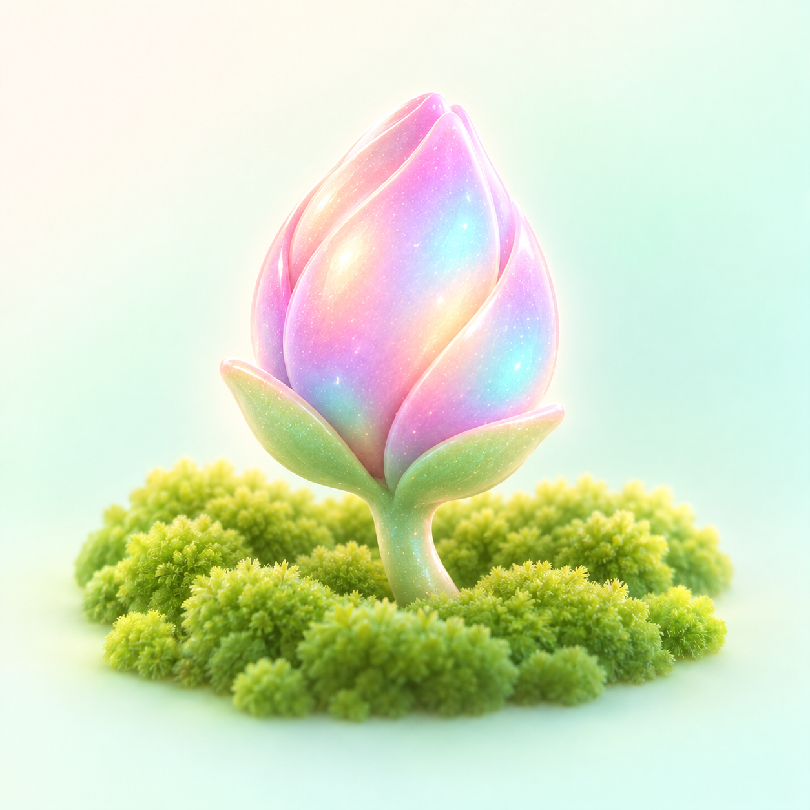

Active
正在盛开你现在正在讨论、正在推进的事，会在视野里保持清晰。
BLOOM & LISTEN
项目、文件和你正在关注的方向，不必每次都从头解释。通通会慢慢记住值得留下的东西，也会在你暂时转身时，把它们安静地放在一旁。
不是把所有过去都塞进上下文。是让知识跟着你慢慢长出来。

✦知识01 · TODAY'S ATTENTION
有些主题正在盛开，有些话题只是暂时安静。通通不会急着给它们下结论。
02 · ATTENTION CACHE
真正的记忆不应只有“记住”和“删除”。有些东西，只是最近没有被提起。
你现在正在讨论、正在推进的事，会在视野里保持清晰。
话题安静下来，但还留在枝头。需要时，一样找得回来。
只有长时间没有价值连接的内容，才会安静离开主花园。
03 · ATTENTION ENGINE
通通会同时看一件事被提起的频率、距离上次出现的时间，以及它是否仍在你正在讨论的方向里。
高频出现的主题会更靠近你；暂时没有提起的内容也不会立刻消失。通通会留出一点时间，等你决定要不要再回来。
近期关注：双阶段关注缓存机制
DSAC · 演示机制用「即时激活 + 频次强化 + 时间衰减 + 缓冲保留 + 边界遗忘」处理持续变化的关注对象，而不是只按最近访问时间淘汰。
从本轮用户输入与模型回复识别实体。当前批次实体即时关注度固定为 Aₜ(e) = 1，按出现顺序插入或移动到活跃队列前部。
已在活跃区：累计提及次数并更新时间；在衰减区：重新激活并保留历史次数；两处都没有：作为新实体初始化。
对非本轮实体，先看归一化提及频次 F(e) = N(e) / max N(x)，再看时间新鲜度 R(e) = e−λ(t − Last(e))。
最终得分为 A(e) = αF(e) + (1 − α)R(e)；出现越多、离上次提及越近，排序越靠前。
每轮结束后，当前批次优先保留；历史实体按得分重排，Top K 进入活跃区。超过 T 的实体转入衰减区，不会立刻从记忆中抹去。
衰减区超过 D 时，再淘汰低优先级实体；此后被重新提及时，才会作为全新实体初始化。
普通 LRU 主要看最近访问时间。DSAC 同时考虑当前批次、历史频次、时间新鲜度与 Active / Decay 迁移关系。
例如连续讨论「美团老鼠套餐」后问“这个现在还能办吗？”，活跃关注能帮助恢复“这个”所指的业务实体。
04 · MEMORY GROWS
“中午吃什么”不需要变成永久记忆；而你怎样写周报、长期在研究什么、项目走到了哪里，才值得被温柔地留下来。
偏好中文、结构清楚、用数字说重点。下次整理时，通通会从这个方向开始。
从 8 次确认中慢慢长出不是孤立关键词，而是和检索、图谱、实体消歧连在一起的一片枝叶。
持续关注 23 天知道它正在推进，也记得你已经讨论过的关键选择和待解决的方向。
最近更新于今天05 · FILES TAKE ROOT
在你明确授权的目录里，通通只读取新加入或发生变化的文件，把散落的信息变成可回到的知识入口。
06 · FIND IT AGAIN
不需要记住完整文件名。模糊的画面、一个图标、半句标题，也可以成为回去的路。
已为你整理出 3 个可能相关的内容
红色角色 · 联通标识 · 产品封面
角色视觉 · 个人知识 · 产品路径
品牌语气 · 使用场景 · 工作陪伴
07 · MORE THAN TEXT
文档、笔记与消息里的主题和结论。
视觉线索、图标和画面，也能成为检索入口。
在授权后，语音中的重点可以留下结构化提示。
画面与声音一起帮助理解一段内容。
它们最后都会汇到 百花听风，而不是变成四个互不认识的角落。
08 · NEW INTEREST
「实体消歧」在过去 7 天出现了 13 次，还连接着 OpenEA、知识图谱和项目资料。要不要把它放到更近一点的地方？
是否关注，永远由你决定。
09 · LISTEN TO THE WORLD
基于长期关注的主题，通通会把可能有关的公开信息放到晨报候选里；这里只展示演示资讯，不会自动跳转外站。
因为你最近持续讨论 OpenEA 与知识图谱。
因为你在文件与图片的统一检索上停留得更久。
因为它和你正在形成的个人知识路径相连。
10 · SELF EVOLUTION
今天，它记住一次对话。一个月后，它看见你反复回到的方向。很久以后，它知道哪些资料、主题和表达方式，是你真正愿意带着往前走的东西。
对话 → 当前关注 → 长期知识 → 新的发现 → 更懂你的下一次回答
MY BLOOM PROFILE
不是给你贴标签，而是把你允许留下的脉络，整理成你可以随时查看和更正的样子。
多模态知识图谱 · 实体消歧 · FG-CLIP2 · 专利交底书
Agent · 知识图谱 · 多模态检索
中文 · 结构化 · 用数字说重点
已授权文件 84 · 主题 17 · 本周新增知识 9
YOUR GARDEN, YOUR RULES
个人知识默认不扫描；只读取你明确授权的目录。密码、令牌和验证码不会进入花园。
当前：仅展示演示范围，不进行实际扫描。
BLOOM & LISTEN
通通会替你把值得留下的东西，安静地记着。
回到今天的关注 ↑通通搭子，懂联通，更懂你。11 · WHAT STAYS
资讯、网页和论文只有在真正有长期价值时，才会变成一条可追溯的知识卡：标题、摘要、来源、日期、链接、关键词与主题。
原网页和论文不会被自动下载；新对话里你的当前表达，始终优先于过去的记录。
把可行动的结论写成短摘要，保留回到原始来源的入口。
主题：行业趋势 · 日期：2026.09.16沉淀不是把材料堆起来，而是让下一次检索有清晰线索。
来源：公开网页 / 论文 · 演示数据LOAD TONGTONG
通通会读取本地状态、长期知识和通通小镇快照，帮你续上上下文；这是恢复流程说明，不会在这个页面连接任何真实数据。
演示中：等待一句「加载搭子」。